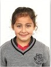

.jpg)
.jpg)
.jpg)
.jpg)
| nro | nombre | nota#1 | nota#2 | promedio | imagen |
| 1 | Jenny | 15 | 16 | 15.5 | |
| 2 | Maria | 20 | 18 | 19 | |
| 3 | Rosa | 15 | 20 | 17.5 | |
| 4 | Pedro | 20 | 15 | 17.5 | |
| 5 | Lucia | 12 | 18 | 15 |  |

El sistema educativo venezolano está conformado de tres instancias. Educación básica, Educación media y Educación universitaria, estos sistemas educativas tienen la visión de alguna forma u otra mejorar la calidad de vida de los venezolanos por el hecho de ser una de las herramientas esenciales para el desarrollo humano. Este sistema educativo venezolano pese que se ha ampliado desde comienzos del siglo debido al paradigma socialista no ha alcanzado en su totalidad de sus objetivos, pero antes de llegar a este último punto es mi deber comunicar de una forma sintética lo que se puede encontrar en cada una de estas instancias. 1. Educación básica: Esta educación está conformada desde el momento de nacimiento hasta la edad de los 11 o 12 años. En la cual está subdividida en:
1.1 Etapa maternal: Conformada desde el momento del nacimiento hasta los 3 años.
1.2 Etapa preescolar: Conformada desde los 3 a los 6 años.
1.3 Etapa primaria: Está conformada de los 6 a los 12 años.
1.4 Etapa de educación media: Suele estar conformada desde los 12 y 16 o 17 años.
Esta edad en el sistema venezolano permite que el estudiante desarrolle sus primeras etapas cognitivas de desarrollo, como también desempeñe sus primeros pasos como estudiante académico que sea consecuente con las educaciones posteriores. Esta edad es importante para en el desarrollo psicosexual y social, es por ello que el desempeño del estudiante en esta instancia tiene que ser profundamente investigado y estudiado al margen de la psicología educativa. La segunda etapa del sistema educativo venezolano está conformada por la Educación Universitaria, en la cual está conformada por estos distintos niveles:
1.1 Educación Universitaria de pregrado: Esta está conformada por carreras cortas de (3) años y carreras largas de (5) años.
1.2 Educación Universitaria de postgrado: especializaciones, maestrías, doctorados. Esta educación forma parte de la educación madura del venezolano, en la cual se le debe enseñar de una manera formal y académica cada una de las materias necesarias para poder ejercer un poder laboral en un área de la ciencia o disciplina determinada. Es una etapa donde la profundidad intelectual es necesaria y es donde el individuo desarrolla en la forma más concreta, lógica y científica cada una de las enseñanzas aplicadas. Sobre todo en las áreas de postgrado, en la cual el individuo debe aprender a ser autodidacta e investigador para así poder alcanzar el desarrollo académico pleno en la República Bolivariana de Venezuela.
Este sistema a pesar de alcanzar ciertas expectativas, como la inclusión académica, deja mucho que desear en ciertos sectores en cómo se enfoca la educación. Es cierto que la educación en Venezuela se ha propagado mucho a comienzos de siglo; pero pienso que aún puede ser mejorado. En los próximos párrafos trataré de hacer un breve análisis de la problemática de la educación venezolana no tratando de criticar directamente a las instituciones si no tratar de que el análisis abarque de una forma mucho más amplia y esquemática esta problemática.
A. La educación desde el nacimiento: Las madres y los padres deben ser educadas para que desarrollen no tan solo de manera intuitiva, si no científica las primeras enseñanzas al infante. Este desarrollo se debe realizar debido a que los niños están en un proceso de desarrollo tan importante en este periodo que una mala praxis a la hora de ejercer el rol familiar puede ocasionar problemas irreversibles al individuo que próximamente será un adulto.
B. La educación preescolar: No todas las profesoras de educación preescolar están preparadas con los conocimientos previos para poder realizar tal profesión. Los niños deben ser evaluados psicológicamente para ver si tienen problemas en el desarrollo o para así crear estrategias que logren estimular su intelectualidad.
C. La educación primaria: La falta de capacitación en la psicología del infante por parte del docente y la falta de creatividad en la sistemática educativa hace que el estudiante comience poco a poco a perder el incentivo académico y su creatividad. Es cierto que algunos si logran acoplarse a este sistema, pero si queremos llegar a la excelencia debemos que esos algunos alcancen una totalidad.
D. La educación media: Desde se comienza la educación media sus defectos se hacen denotar. Una gran parte del personal no está capacitado o no aplica las técnicas psicológicas para el incentivo motivacional de clases, la mayoría de las instituciones carecen de psicólogo que tenga el rol de orientador en la población estudiante. La educación sexual debería ser impartida desde primero al quinto año. Las materias que se suelen dar en los pensum académicos no están orientadas en la personalidad y aptitudes de los estudiantes. Lo cual no debería ser así, debido a que esa una etapa en donde el adolescente está en pleno descubrimiento de sí mismo, en consecuencia, el sistema educativo debe incentivarlo a descubrirse y no a perderse.
Por otra parte el sistema educativo universitario, a pesar de haberse ampliado a una gran parte de la población venezolana este ha perdido calidad a escala internacional. Estas consecuencias han sido nefastas, ya que se ha observado que en distintos países se le ha restringido la capacidad de ejercer a personas profesionales de nuestro país. Este problema se puede resolver haciendo de manera más afectiva la educación venezolana en anteriores instancias, como también popularizando los exámenes de admisión. Se debe incentivar que el sistema educativo venezolano esté a la vanguardia internacional y que desarrolle investigaciones de carácter científico, es por ello que se debe invertir más en su desarrollo, desde el ámbito maternal hasta el rango universitario, para que las personas el día de mañana puedan vivir en una sociedad mucho más desarrollada.